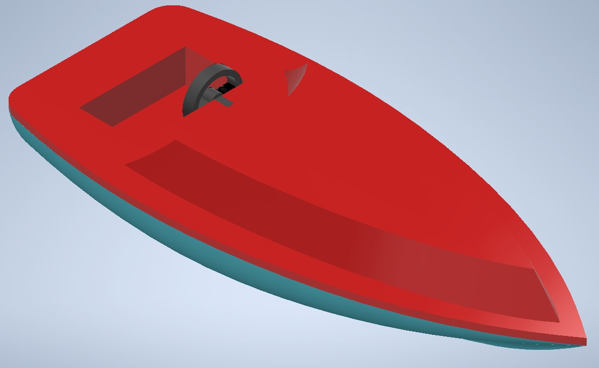

Automatización en producción de juguetes
La empresa Bricajo Toys acude a AUSOL en busca de una propuesta de automatización en el proceso de manufactura de producción de tres juguetes, cumpliendo los siguientes requerimientos.
- Una etapa con participación robótica, debidamente justificada.
- Gemelo digital de la planta en tecnomatix
- Sistema SCADA con gemelo digital en NX y conexión con STUDIO 5000
- Propuesta economica con indicadores para validar su viabilidad
Punto de partida
En base a los datos recolectados en planta, los productos y procesos se dividen así.
Productos
 Imagen 1. Barco de juguete. Fuente: Elaboración propia.
Barco adsasdProceso
Una vez adquirido los datos de producción se identifican los procesos necesarios para la producción en cadena de los 3 juguetes.